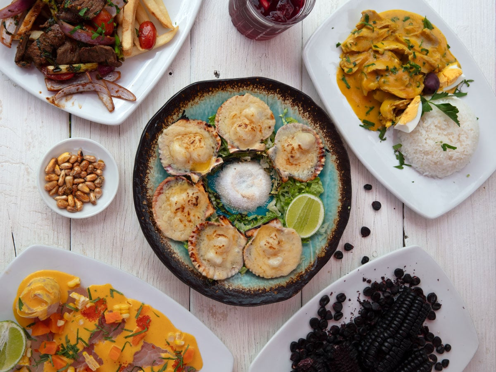

Waialua, North Shore · Hawaii
Peruvian
Criolla Cuisine
Authentic Peruvian criolla cuisine, handmade with family love,
in the heart of the North Shore.
Scroll
Waialua, North Shore · Hawaii
Authentic Peruvian criolla cuisine, handmade with family love,
in the heart of the North Shore.

Everything that makes us different, in our own words and in the words of those who have already visited us.
Ingredients you can't find in Hawaii — like rocoto pepper and purple corn — travel specially from Peru, thanks to friends who ship them to Chef Miguel.
Miguel cooks, Fanny handles the desserts, and the next generation already helps out front of house. The tables they hand-painted are the ones you're sitting at.
The kitchen only fires up once your order comes in. Nothing is prepped ahead of time or reheated.
Something not on the menu? If Miguel has it, he'll cook it — from a Peruvian fish stew to sushi, thanks to his time in Japanese restaurants.
Our vegetables come from Oahu farms. We support local producers whenever we can, just like when we got our start at the Farmers Markets.
The customers who come back every week know us as "Aunty Fanny and Uncle Miguel" — not just another restaurant.
Miguel and Fanny Torres are Peruvian, but their story also runs through Argentina — that's where their two children were born, while Miguel cooked in well-known Peruvian-nikkei restaurants across South America. In 2020 Miguel came to Hawaii alone, to help a friend open a restaurant — a plan that the COVID-19 pandemic ended up stalling.
Instead of giving up, he found another job on the island. It wasn't until 2022 that he was able to bring Fanny and their two children to Hawaii. Together they started from scratch: first at Oahu's Farmers Markets, then with a food trailer parked at what is now their own restaurant, Peruvian Corner, in Waialua.
Today that corner has become our Backyard Oasis. We renovated it ourselves: hand-painted tables, fresh flowers under red umbrellas, and art from local artists on the walls. The hands that make and serve every dish are the same ones that painted the tables and set out the flowers.
Fresh mahi ceviche, grilled anticuchos, chifa-influenced lomo saltado, nikkei tiradito… every bite tells a story of three cultures: Peruvian, Japanese and Chinese, now united in this corner of the Pacific.


To understand what you're eating at Peruvian Corner, it helps to understand where it comes from.
The foundation of homestyle Peruvian cooking: the blend of colonial Spanish tradition with Andean and indigenous ingredients. It's the starting point for almost everything Chef Miguel cooks.
Japanese immigrants who arrived in Peru brought their cutting technique and their respect for fresh fish. That blend gave birth to tiradito — and today, to the sushi Miguel prepares on request.
Cantonese immigrants brought the wok to Lima. That's how lomo saltado — Peru's national dish — and chaufa, fried rice with an Asian influence, were born.
91 reviews on Yelp, the vast majority 5 stars. Customers who come back week after week describe the food as a trip straight to South America and the service as a family welcoming them into their own home — that's how good a time visitors have here.
We got our start at Oahu's farmers markets and we still travel the island. Find us at:
Follow our Instagram to find out where we'll be each week.
@peruviancornerhawaii
Call a few minutes before coming to the Backyard Oasis, or order straight online. We also take orders through WhatsApp.
📞 (808) 888-0234 · WhatsApp · Phone · Text